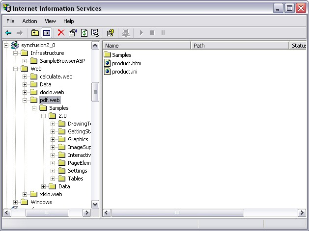

Now, you have created a ASP.NET application (refer Creating Platform Application). This section covers the following:
· Deploying Essential PDF in an ASP.NET Application
· Create and add a PDF document with pages to the application
Deploying Essential PDF in an ASP.NET Application
This section provides information and instructions for deploying ASP.NET applications that use Essential PDF for ASP.NET. This is in addition to the section on Deploying Essential Studio for ASP.NET (Common-->Deploying Essential Studio for ASP.NET) in the Getting Started Guide. Essential PDF ships with .NET Framework 2.0 (Visual Studio 2005) version of the C# and VB.NET samples which are installed in 2.0 directories. During installation, application directories are created in IIS for each of the C# and VB.NET samples.

Figure 20: Sample Application Directories in IIS
The following steps will guide you to deploy Essential PDF in an ASP.NET application:
1. Marking the Application directory-The appropriate directory, usually where the aspx files are stored, must be marked as Application in IIS.
2. Syncfusion Assemblies-The Syncfusion assemblies need to be in the bin folder that is beside the aspx files.
 Note:
They can also be in the GAC, in which case, they should be
referenced in Web.config file.
Note:
They can also be in the GAC, in which case, they should be
referenced in Web.config file.
|
[ASPX]
<configuration> <system.web> <compilation> <assemblies> <add assembly="Syncfusion.Pdf.Base, Version=x.x.x.x, Culture=neutral, PublicKeyToken=3D67ED1F87D44C89"/></assemblies> </compilation> ... </system.web> </configuration> |
Note: The
version number represented by x.x.x.x in the above code will vary depending on
the version you are linking to.
3. Data Files-If you have .xml, .mdb, or other data files, ensure that they have sufficient security permission. Authenticated users should have full control over the files and the directories in order to give ASP.NET code, enough permissions to open the file during runtime.
Refer to the document in the following path, for step by step process of Syncfusion assemblies deployment in ASP.NET.
http://www.syncfusion.com/support/user/uploads/webdeployment_c883f681.pdf
Note: Application with Essential PDF needs
following dependent assemblies for deployment.
· Syncfusion.Core.dll
· Syncfusion.Compression.Base.dll
· Syncfusion.Pdf.Base.dll
Essential PDF is now deployed in your ASP.NET application.
Create and add a PDF document with pages to the application
The following code snippet will guide you to create and add PDF document to this application:
|
[C#]
//Create a new document. PdfDocument doc = new PdfDocument();
//Add a page PdfPage page = doc.Pages.Add();
//Create Pdf graphics for the page PdfGraphics g = page.Graphics;
//Create a solid brush PdfBrush brush = new PdfSolidBrush(Color.Black);
float fontSize = 20f;
//Set the font PdfFont font = new PdfStandardFont(PdfFontFamily.Helvetica, fontSize);
//Draw the text g.DrawString("Hello world!", font, brush, new PointF(20, 20));
//Stream the output to the browser. if (this.CheckBox1.Checked) { doc.Save("Sample.pdf", Response, HttpReadType.Open); } else { doc.Save("Sample.pdf", Response, HttpReadType.Save); } |
The sample pdf document created through the above procedure is shown below.

Figure 21: PDF Document with pages
A PDF document is created in the ASP.NET application.